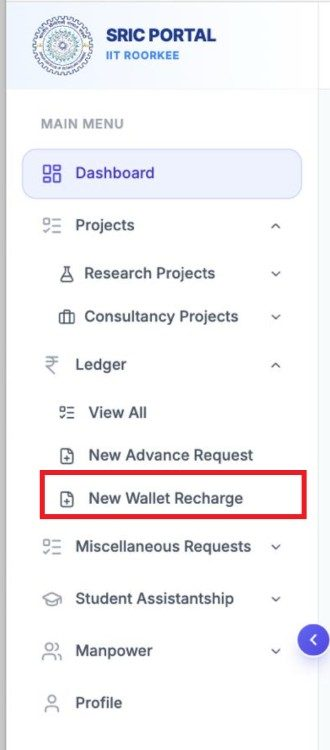
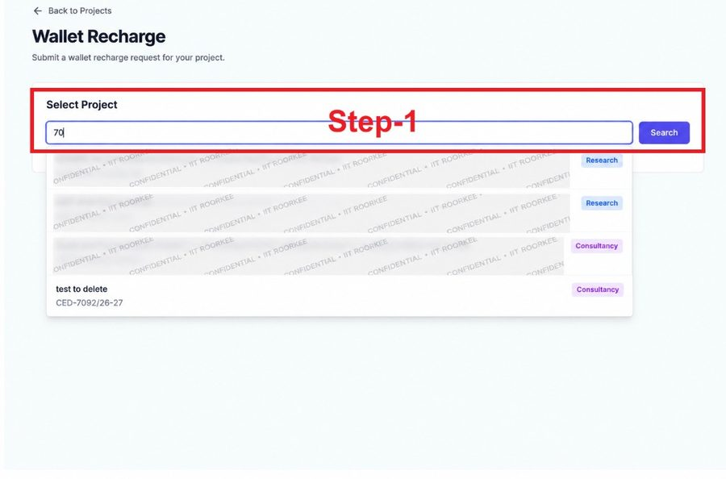

Institute Instrumentation Centre · Institute Equipment Booking Portal (equip.iitr.ac.in)
Recharge from project funds (faculty)
SRIC Portal (rnd.iitr.ac.in) → Ledger → New Wallet Recharge. Credited automatically, usually within minutes.
No project funds available (faculty)
Booking Portal → Wallet → Recharge Wallet → Direct Cash Deposit / Bank Transfer, then pay at the SRIC Bill Section.
Students linked to a supervisor’s wallet
Same Direct Cash Deposit / Bank Transfer option on the student’s own Wallet page; credited to the supervisor’s wallet.
Discontinued
Project Grant requests raised on the Booking Portal, and recharge by uploading a payment receipt.
Option ARecharge from project funds through the SRIC Portal
Sign in to the SRIC Portal at https://rnd.iitr.ac.in.
In the left menu, open Ledger → New Wallet Recharge (Figure 1).
Under Select Project, search by project number or title and select the project that will fund the recharge (Figure 2).
Choose the Receiver Type (Figure 4):
• IIC – for instruments of the Institute Instrumentation Centre
• Tinkering – for Tinkering Lab facilities
The Receiver Type decides which of your wallet balances is credited.
Enter the Amount and a Remark, check the Recharge Summary and click Submit Recharge (Figure 3).
SRIC sends the recharge to the Booking Portal electronically. The amount is credited to your IIC wallet automatically and you receive a confirmation email with the SRIC Ledger ID, project number and new balance.
To check at once, open Wallet → How to recharge on the Booking Portal and click Refresh. Your Recent SRIC recharges are listed there with their status.

Figure 1 – SRIC Portal: Ledger → New Wallet Recharge
Recharges from project funds can be made only by the faculty member (Principal Investigator). Each SRIC Ledger ID is credited only once. The Booking Portal checks for new SRIC recharges every 5 minutes; checks pause during peak booking time every Wednesday, 8:55–9:15 PM IST, and a recharge made then is credited right after.
SRIC Portal screens

Figure 2 – Select the project that will fund the recharge
Figure 3 – Choose the Receiver Type, enter the Amount and a Remark, then click Submit Recharge
Option BDirect Cash Deposit / Bank Transfer (when no project funds are available)
Sign in to the Booking Portal (https://equip.iitr.ac.in) and click Wallet management → Open Wallet on your Dashboard (or Wallet in your profile menu).
Click Recharge Wallet and select Direct Cash Deposit / Bank Transfer as the Recharge method.
Under Credit to, select the department, and enter the Amount (₹) (minimum ₹100).
Read the undertaking (that no project funds are currently available for this recharge) and tick I agree to the above undertaking.
Click Send OTP, enter the 6-digit OTP sent to your registered email (valid for 10 minutes) and click Verify & Submit.
Note the Transaction ID shown on screen (it is also emailed to you). Deposit the amount at the SRIC Bill Section, or complete the bank transfer, quoting this Transaction ID.
When the SRIC Bill Section approves the request on receipt of the funds, the amount is credited to your wallet at once and you are informed by email.
StudentsDirect recharge from the student’s dashboard
For IITR students linked to their supervisor’s wallet:
Sign in to the Booking Portal and click Wallet management → Open Wallet on the Dashboard.
Click Recharge Wallet and choose Direct Cash Deposit / Bank Transfer.
Select the department under Credit to, enter the Amount (₹) (minimum ₹100) and tick I agree to the above undertaking.
Click Send OTP, enter the OTP from the email and click Verify & Submit. Note the Transaction ID.
Deposit the amount at the SRIC Bill Section, or complete the bank transfer, quoting the Transaction ID.
On approval, the amount is credited to the supervisor’s wallet for the selected department and can be used for bookings by the supervisor and linked students. The supervisor receives a copy of the request and of its outcome.
A student who is not yet linked to a supervisor’s wallet can send a link request from the same Wallet page.
Verification and timelines
SRIC Portal recharge: normally credited within minutes. An entry that cannot be matched automatically (for example, by Employee ID or Receiver Type) is checked by the IIC office and shows as Being checked until it is credited.
Direct Cash Deposit / Bank Transfer: credited as soon as the SRIC Bill Section approves the request; receipt of funds is then confirmed against the SRIC cash-book (entries dated on or after 30 September 2026).
Every credit is confirmed by email and listed in your wallet transactions with its reference.
Important. Choose the Receiver Type carefully: the wallet keeps a separate balance for each department, and a booking is paid from the balance of the equipment’s department. Use Direct Cash Deposit / Bank Transfer only when project funds cannot be used. The SRIC Bill Section accepts a deposit only against a valid Transaction ID. Recharge by uploading a payment receipt is no longer accepted.
Help and contact
Support Ticket: sign in and open Support Tickets (equip.iitr.ac.in/tickets); please quote the Transaction ID or SRIC Ledger ID.
Email: iicbooking@iitr.ac.in
User Guide: equip.iitr.ac.in/user-guide (Wallet section)
SRIC Portal access or project ledger: SRIC Office
Institute Instrumentation Centre, Indian Institute of Technology Roorkee · Institute Equipment Booking Portal